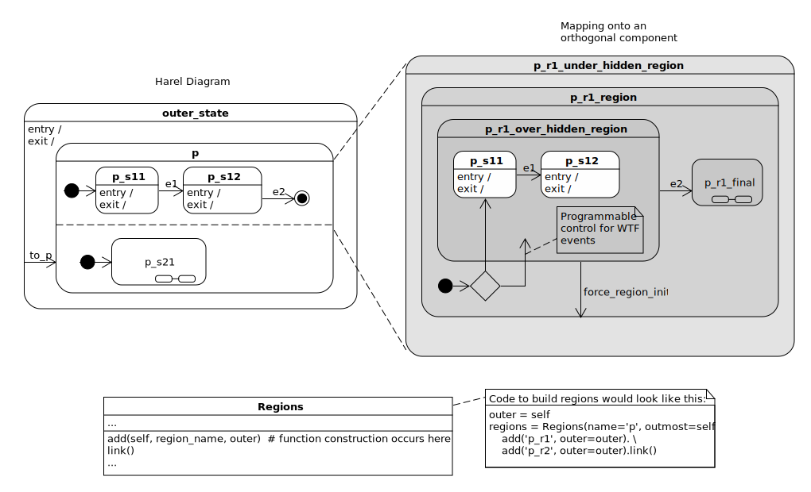

Techniques#
This section will focus on Python techniques that aren’t specific to the design.
Finding a Function/Method’s Decorators#
Goal: Find a way to see how a function or method has been decorated.
To reflect upon how a function has been decorated, you can use this technique defined by Shane Holloway on stackoverflow.
def find_decorators(target):
'''find a method/function's decorators
**Note**:
This function will not work for function's built from templates
Solution provided by Shane Holloway on `stackoverflow
<https://stackoverflow.com/a/9580006>`_
**Args**:
| ``target`` (callable): the function/method
**Returns**:
(dict): key/value pair, key is the function/method the value is array
| of decorators
**Example(s)**:
.. code-block:: python
find_decorators(p_p22_s22) \
# => {'p_p22_s22': ["Name(id='orthogonal_state', ctx=Load())"]
find_decorators(p) # => {'p': ["Name(id='state', ctx=Load())"]
'''
import ast, inspect
res = {}
def visit_FunctionDef(node):
res[node.name] = [ast.dump(e) for e in node.decorator_list]
V = ast.NodeVisitor()
V.visit_FunctionDef = visit_FunctionDef
V.visit(compile(inspect.getsource(target), "?", 'exec', ast.PyCF_ONLY_AST))
return res
Creating Functions from Templates#
The miros-xml package adds four hidden functions (grey in the diagram) for each orthogonal state:
Goal: We want the add method of the Regions object to create the grayed
out functions for us, using a predetermined naming convention.
We will use the module_namespace to attach and get functions based on a string,
using the Python setattr/getattr builtins.
import sys
module_namespace = sys.modules[__name__]
# these are the same
module_namespace.p_r1_under_hidden_region()
getattr(module_namespace, 'p_r1_under_hidden_region')()
Before we make something that writes functions, we will type one out by hand, pass a full regression test, then identify the parts of the function we want to change:
1 2 3 4 5 6 7 8 9 10 11 12 13 14 15 16 17 18 19 20 21 22 | @othogonal_state
def p_r1_under_hidden_region(r, e):
status = return_status.UNHANDLED
__super__ = r.bottom
if(e.signal == SEARCH_FOR_SUPER_SIGNAL):
r.temp.fun = __super__
return return_status.SUPER
if(r.token_match(e.signal_name, "enter_region")):
r._p_spy(e)
status = r.trans(p_r1_region)
elif(e.signal == signals.INIT_SIGNAL):
r._p_spy(e)
status = return_status.HANDLED
elif(e.signal == signals.ENTRY_SIGNAL):
r._p_spy(e)
status = return_status.HANDLED
else:
r.temp.fun = __super__
status = return_status.SUPER
return status
|
Things that need to change in the above function:
it needs a unique name (line 1)
it will reference the
p_r1_regionfunction, line 12.
Now we write a template, knowing that we will rename it later. We use the
*, character to separate the non-mandatorily-named arguments from the ones
that require a name; region_state_name. We also add the **kwargs as a
place holder for named arguments this function will not use.
1 2 3 4 5 6 7 8 9 10 11 12 13 14 15 16 17 18 19 20 21 22 23 24 25 26 27 28 29 | def template_under_hidden_region(r, e, *, region_state_name=None, **kwargs):
'''some docstring'''
status = return_status.UNHANDLED
__super__ = r.bottom
region_state_function = \
getattr(module_namespace, region_state_name)
if(e.signal == SEARCH_FOR_SUPER_SIGNAL):
r.temp.fun = __super__
return return_status.SUPER
if(r.token_match(e.signal_name, "enter_region")):
r._p_spy(e)
status = r.trans(region_state_function)
elif(e.signal == signals.ENTRY_SIGNAL):
r._p_spy(e)
status = return_status.HANDLED
elif(e.signal == signals.INIT_SIGNAL):
r._p_spy(e)
status = return_status.HANDLED
elif(e.signal == signals.EXIT_SIGNAL):
r._p_spy(e)
status = return_status.HANDLED
else:
r.temp.fun = __super__
status = return_status.SUPER
return status
|
Notice on lines 7-8, we use getattr(module_namespace, region_state_name) to
get the region function. This function is used on line 16.
If region_state_name was set to p_r1_region, our function would behave
the same as the one we wrote out by hand. Notice, that the template does not
have an orthogonal decorator, but our handwritten function does. This
decorator will be added later.
Now we want to create a new function based on some naming conventions:
1 2 3 4 5 6 7 8 9 10 11 12 13 14 15 16 17 18 19 20 21 22 23 24 25 26 27 28 29 30 31 32 33 34 35 36 37 38 39 40 41 42 43 44 45 46 47 48 49 50 51 52 53 54 55 56 57 58 59 60 61 62 63 64 65 66 67 68 69 70 71 72 73 74 75 76 77 78 79 | from functools import partial
from functools import lru_cache
from functools import update_wrapper
# functions at the top of the file
@lru_cache(maxsize=128)
def under_hidden_region_function_name(region_name):
return region_name + "_under_hidden_region"
@lru_cache(maxsize=128)
def region_function_name(region_name):
return region_name + "_region"
@lru_cache(maxsize=128)
def over_hidden_region_function_name(region_name):
return region_name + "_over_hidden_region"
@lru_cache(maxsize=128)
def final_region_function_name(region_name):
return region_name + "_final"
# ..
# in the Regions class:
def add(self, region_name, initial_state, outer):
# ...
region_name = "p_r1" # force the region_name for our example
under_s = under_hidden_region_function_name(region_name)
region_s = region_function_name(region_name)
over_s = over_hidden_region_function_name(region_name)
final_s = final_region_function_name(region_name)
# The 'template_under_hidden_region' is defined in documentation above,
# the other templates would be defined in similar manner
for function_name, template in [
(under_s, template_under_hidden_region),
(region_s, template_region),
(over_s, template_over_hidden_region),
(final_s, template_final)
]:
# The 'template' and 'region_state_name' are used in the
# 'template_under_hidden_region', but the other named arguments are
# placed into its kwargs argument and ignored by the function. These
# extra named arguments are needed by one or more of the other template
# functions.
fn = partial(
template,
this_function_name=function_name,
under_region_state_name=under_s,
region_state_name=region_s,
over_region_state_name=over_s,
final_state_name=final_s,
initial_state_name=initial_state
)
# give the fn the meta data defined by its template
fn = update_wrapper(fn, template)
# over-write the function name
fn.__name__ = function_name
# wrap the function with an instrumentation decorator
fn = orthogonal_state(fn)
# over-write the instrumented function with its name
fn.__name__ = function_name
# place the new function in this module's namespace
setattr(module_namespace, function_name, fn)
# Here we get the functions from the name space using our function names as
# strings.
region_state_function = getattr(module_namespace, region_s)
over_hidden_state_function = getattr(module_namespace, over_s)
under_hidden_state_function = getattr(module_namespace, under_s)
assert(callable(p_r1_under_hidden_region)) # can call what was created
assert(callable(under_hidden_state_function)) # can call indirectly too
assert(callable(region_function_name))
assert(callable(over_hidden_state_function))
# ... construct the regions
|
The above code listing shows how all of our hidden functions would be made from a set of templates, an initial_state target and some function names built by a convention using the region name.
Lines 35-40 show how we specify a template-naming partnership.
Lines 47-55 shows how a new function is build from the template.
Lines 57-66 name our new function, wrap it with an instrumentation decorator, name this wrapped function, then attach it to the modules namespace.
Lines 70-72 show how to get a function using its name.
Warning
If you have done work like this, never use the eval(function_name_as_string)
to get access to the function. This will destroy the function’s __name__ and
__doc__ values and cause your tests to fail.
Adding and Removing Behavior from Functions#
Goal: To be able to compose state functions from a set of templates which can:
impose a behavior: when a function receives X event, call handler Y with the event
suggest a behavior: if the function hasn’t had a behavior imposed already, impose the behavior
remove the behavior associated with a signal number
describe its specification
have the capability to do all of the above while the hsm is running
I think it will be easier to start with the interface, then describe the technique after we see how it is used:
def template_trans(hsm, e, state_name=None, *, trans=None, **kwargs):
'''prints out the state and signal name, then transitions'''
status = return_status.HANDLED
assert trans
print("{} {}".format(state_name, e.signal_name))
status = hsm.trans(getattr(module_namespace, trans))
return status
def template_handled(hsm, e, state_name=None, **kwargs):
'''prints out the state and signal name'''
status = return_status.HANDLED
print("{} {}".format(state_name, e.signal_name))
return status
# define our hsm
hsm = HsmWithQueues()
a1 = partial(__template_state, this_function_name="a1", super_state=hsm.top)()
b1 = partial(__template_state, this_function_name="b1", super_state=a1)()
c1 = partial(__template_state, this_function_name="c1", super_state=hsm.top)()
# create some behaviors
a1_entry_hh = partial(template_handled)
a1_init_hh = partial(template_trans, trans="b1")
a1_e1_hh = partial(template_trans, trans="c1")
# link the behaviors with signals names
a1 = a1(hsm=hsm, signal=signals.ENTRY_SIGNAL, handler=a1_entry_hh)
a1 = a1(hsm=hsm, signal=signals.INIT_SIGNAL, handler=a1_init_hh)
a1 = a1(hsm=hsm, signal=signals.e1, handler=a1_e1_hh)
b1_entry_hh = partial(template_handled)
b1_init_hh = partial(template_handled)
b1 = b1(hsm=hsm, signal=signals.ENTRY_SIGNAL, handler=b1_entry_hh)
b1 = b1(hsm=hsm, signal=signals.INIT_SIGNAL, handler=b1_init_hh)
c1_entry_hh = partial(template_handled)
c1_init_hh = partial(template_handled)
c1_e2_hh = partial(template_trans, trans="b1")
c1 = c1(hsm=hsm, signal=signals.ENTRY_SIGNAL, handler=c1_entry_hh)
c1 = c1(hsm=hsm, signal=signals.INIT_SIGNAL, handler=c1_init_hh)
c1 = c1(hsm=hsm, signal=signals.e2, handler=c1_e2_hh)
# Run our hsm
hsm.start_at(a1)
hsm.post_fifo(Event(signal=signals.e1))
hsm.post_fifo(Event(signal=signals.e2))
hsm.complete_circuit()
Terminal output:
a1 ENTRY_SIGNAL
a1 INIT_SIGNAL
b1 ENTRY_SIGNAL
b1 INIT_SIGNAL
a1 e1
c1 ENTRY_SIGNAL
c1 INIT_SIGNAL
c1 e2
a1 ENTRY_SIGNAL
b1 ENTRY_SIGNAL
b1 INIT_SIGNAL
Now imagine we want to add some new behavior:

The code to do this:
b1_e2_hh = partial(template_trans, trans="c1")
# this will work because e2 is not registered the b1 state
b1 = b1(hsm=hsm, signal=signals.e2, handler=b1_e2_hh, suggest_behavior=True)
hsm.post_fifo(Event(signal=signals.e2))
hsm.complete_circuit()
Terminal output:
b1 e2
c1 ENTRY_SIGNAL
c1 INIT_SIGNAL
To over-write some existing behavior:

The code to do this:
c1_e2_hh = partial(template_trans, trans="a1")
c1 = c1(hsm=hsm, signal=signals.e2, handler=c1_e2_hh)
hsm.post_fifo(Event(signal=signals.e2))
hsm.complete_circuit()
Terminal output:
c1 e2
a1 ENTRY_SIGNAL
a1 INIT_SIGNAL
b1 ENTRY_SIGNAL
b1 INIT_SIGNAL
Now suppose we want to change the hsm’s behavior, but we don’t want to have to manipulate it’s state to test it, we just want the state to describe its specification so we can read it.
Let’s read the c1 state specification, remove the e2 behavior then read the c1 state specification again:
print("c1 specification before removal\n")
print(parse_spec(c1(specification=True)))
print("removing e2:{} from c1\n".format(signals.e2))
c1 = c1(hsm=hsm, signal=signals.e2, remove_behavior=True)
print("c1 specification after removal\n")
print(parse_spec(c1(specification=True)))
Terminal output:
c1 specification before removal
c1:<function orthogonal_state.<locals>._pspy_on at 0x7f72f1eba598>
top:<bound method HsmEventProcessor.top of <miros.hsm.HsmWithQueues object at 0x7f72f1556ac8>>
ENTRY_SIGNAL:1 -> c1:functools.partial(<function __template_handler at 0x7f72f1eb2bf8>, state_function_name='c1', signal=1, handler=functools.partial(<function template_handled at 0x7f72f1eb2d08>))
INIT_SIGNAL:3 -> c1:functools.partial(<function __template_handler at 0x7f72f1eb2bf8>, state_function_name='c1', signal=3, handler=functools.partial(<function template_handled at 0x7f72f1eb2d08>))
e2:12 -> c1:functools.partial(<function __template_handler at 0x7f72f1eb2bf8>, state_function_name='c1', signal=12, handler=functools.partial(<function template_trans at 0x7f72f1eb2c80>, trans='a1'))
removing e2:12 from c1
c1 specification after removal
c1:<function orthogonal_state.<locals>._pspy_on at 0x7f72f1eba7b8>
top:<bound method HsmEventProcessor.top of <miros.hsm.HsmWithQueues object at 0x7f72f1556ac8>>
ENTRY_SIGNAL:1 -> c1:functools.partial(<function __template_handler at 0x7f72f1eb2bf8>, state_function_name='c1', signal=1, handler=functools.partial(<function template_handled at 0x7f72f1eb2d08>))
INIT_SIGNAL:3 -> c1:functools.partial(<function __template_handler at 0x7f72f1eb2bf8>, state_function_name='c1', signal=3, handler=functools.partial(<function template_handled at 0x7f72f1eb2d08>))
I have demonstrated that the state functions can be constructed from templates. These state’s can have their topological information added and their behaviors adjusted by just calling them with instructions (they rebuild themselves internally). This can all be done before or while the state machine has been running.
Here is the code which allowed this syntax to work:
import sys
from miros import Event
from miros import signals
from functools import wraps
from functools import partial
from miros import HsmWithQueues
from miros import return_status
from collections import namedtuple
module_namespace = sys.modules[__name__]
SignalAndFunction = namedtuple("SignalAndFunction",
["signal", "function"]
)
StateSpecification = namedtuple(
"StateSpecification",
["function", "super_state", "super_state_name", "signal_function_list"],
)
def orthogonal_state(fn):
'''stand in for the orthogonal_state instrumentation decorator'''
@wraps(fn)
def _pspy_on(*args, **kwargs):
status = fn(*args, **kwargs)
return status
return _pspy_on
def token_match(me, other):
'''stand in for token_match function'''
return me == other
def parse_spec(spec):
'''map a state function spec onto a string'''
function_name = spec.function.__name__
result = f"{function_name}:{spec.function}\n"
result += f"{spec.super_state_name}:{spec.super_state}\n"
if spec.signal_function_list:
for (signal, function) in spec.signal_function_list:
function_name = spec.function.__name__
sn = signals.name_for_signal(signal)
result += f" {sn}:{signal} -> {function_name}:{function}\n"
return result
def __template_state(
hsm=None,
e=None,
sfl=None,
*,
super_state=None,
this_function_name=None,
imposed_behavior=None,
remove_behavior=None,
suggested_behavior=None,
specification=None,
signal=None,
handler=None,
**kwargs,
):
"""A function which can create itself.
Use this to build and run states in a state machine.
**Args**:
| ``hsm=None`` (HsmWithQueues): object with an event processor
| ``e=None`` (Event): event
| ``sfl=None`` ([]): signal function list
| ``*``: all arguments from now on have to be named
| ``super_state=None`` (fn): the super state of this state in the hsm
| ``this_function_name=None`` (str): this function name
| ``imposed_behavior=None`` (bool|SignalAndFunction): a spec of imposed behavior
| ``remove_behavior=None`` (bool|SignalAndFunction): a spec of behavior to remove
| ``suggested_behavior=None`` (bool|SignalAndFunction): a spec of suggested behavior
| ``specification=None`` (bool): to indicate you want the function to provide its spec
| ``signal=None`` (int): signal (used with imposed_behavior,
| remove_behavior, suggested behavior args)
| ``handler=None`` (callable): the callable handler which is associated
| with a behavior, (used with
| imposed_behavior and suggested_behavior
| args)
| ``**kwargs``: arbitrary keyword arguments
**Returns**:
(return_status|fn|StateSpecification|str):
**Example(s)**:
.. code-block:: python
from miros import Event
from miros import signals
from functools import partial
from miros import HsmWithQueues
# +-------------- a ---------------+
# | |
# | +-------b----------+ |
# | | entry / | |
# | *--> print('hello') | | +-----c-----+
# | | | | | |
# | | | +---e1--> |
# | | |<-------e2------+ |
# | +------------------+ | +-----------+
# | |
# +--------------------------------+
# these will be the state handlers
def template_trans(hsm, e, state_name=None, *, trans=None, **kwargs):
status = return_status.HANDLED
assert trans
print("{} {}".format(state_name, e.signal_name))
status = hsm.trans(getattr(module_namespace, trans))
return status
def template_handled(hsm, e, state_name=None, **kwargs):
status = return_status.HANDLED
print("{} {}".format(state_name, e.signal_name))
return status
hsm = HsmWithQueues()
a1 = partial(__template_state, this_function_name="a1", super_state=hsm.top)()
b1 = partial(__template_state, this_function_name="b1", super_state=a1)()
c1 = partial(__template_state, this_function_name="c1", super_state=hsm.top)()
a1_entry_hh = partial(template_handled)
a1_init_hh = partial(template_trans, trans="b1")
a1_e1_hh = partial(template_trans, trans="c1")
a1 = a1(hsm=hsm, signal=signals.ENTRY_SIGNAL, handler=a1_entry_hh)
a1 = a1(hsm=hsm, signal=signals.INIT_SIGNAL, handler=a1_init_hh)
a1 = a1(hsm=hsm, signal=signals.e1, handler=a1_e1_hh)
b1_entry_hh = partial(template_handled)
b1_init_hh = partial(template_handled)
b1 = b1(hsm=hsm, signal=signals.ENTRY_SIGNAL, handler=b1_entry_hh)
b1 = b1(hsm=hsm, signal=signals.INIT_SIGNAL, handler=b1_init_hh)
c1_entry_hh = partial(template_handled)
c1_init_hh = partial(template_handled)
c1_e2_hh = partial(template_trans, trans="b1")
c1 = c1(hsm=hsm, signal=signals.ENTRY_SIGNAL, handler=c1_entry_hh)
c1 = c1(hsm=hsm, signal=signals.INIT_SIGNAL, handler=c1_init_hh)
c1 = c1(hsm=hsm, signal=signals.e2, handler=c1_e2_hh)
# Run our hsm
hsm.start_at(a1)
hsm.post_fifo(Event(signal=signals.e1))
hsm.post_fifo(Event(signal=signals.e2))
hsm.complete_circuit()
"""
if e is None:
rebuild_function = False
if not hasattr(module_namespace, this_function_name):
rebuild_function = True
if isinstance(imposed_behavior, SignalAndFunction):
if sfl == None:
sfl = []
sfl = [
SignalAndFunction(signal=signal, function=function)
for (signal, function) in sfl
if signal != imposed_behavior.signal
]
sfl.append(imposed_behavior)
rebuild_function = True
if signal and not handler:
if remove_behavior is not None and remove_behavior == True:
behavior = SignalAndFunction(signal=signal, function=None)
return getattr(module_namespace, this_function_name)(
hsm=hsm, remove_behavior=behavior
)
elif signal and handler:
function = partial(
__template_handler,
state_function_name=this_function_name,
signal=signal,
handler=handler,
)
behavior = SignalAndFunction(signal=signal, function=function)
if suggested_behavior is not None and suggested_behavior == True:
return getattr(module_namespace, this_function_name)(
hsm=hsm, suggested_behavior=behavior
)
elif imposed_behavior is None or imposed_behavior == True:
return getattr(module_namespace, this_function_name)(
hsm=hsm, imposed_behavior=behavior
)
else:
return getattr(module_namespace, this_function_name)
if isinstance(remove_behavior, SignalAndFunction):
if sfl == None:
pass
else:
sfl = [
SignalAndFunction(signal=signal, function=function)
for (signal, function) in sfl
if signal != remove_behavior.signal
]
rebuild_function = True
if isinstance(suggested_behavior, SignalAndFunction):
if sfl == None:
[]
else:
if (
len(
[
SignalAndFunction(signal=signal, function=function)
for (signal, function) in sfl
if signal == suggested_behavior.signal
]
)
>= 1
):
# the signal is already there, we are ignoring your request
print("... ignoring")
rebuild_function = False
else:
rebuild_function = True
sfl.append(suggested_behavior)
if rebuild_function:
fn = partial(
__template_state,
sfl=sfl,
super_state=super_state,
this_function_name=this_function_name,
)
fn.__name__ = this_function_name
fn = orthogonal_state(fn)
fn.__name__ = this_function_name
setattr(module_namespace, this_function_name, fn)
if hsm:
if hasattr(hsm.temp, "fun"):
if hsm.temp.fun.__name__ == this_function_name:
hsm.temp.fun = fn
if hasattr(hsm.state, "fun"):
if hsm.state.fun.__name__ == this_function_name:
hsm.state.fun = fn
return getattr(module_namespace, this_function_name)
if specification:
spec = StateSpecification(
function=getattr(module_namespace, this_function_name),
super_state=super_state,
super_state_name=super_state.__name__,
signal_function_list=sfl,
)
return spec
return getattr(module_namespace, this_function_name)
if e.signal == signals.GET_STATE_SPEC:
spec = StateSpecification(
function=getattr(module_namespace, this_function_name),
super_state=super_state,
super_state_name=super_state.__name__,
signal_function_list=sfl,
)
return spec
elif e.signal == signals.REFLECTION_SIGNAL:
return this_function_name
handler = None
if isinstance(sfl, list):
for (signal, function) in sfl:
if token_match(signal, e.signal):
handler = function
break
if handler:
status = handler(hsm, e, state_function_name=this_function_name)
else:
if hsm.top == super_state:
hsm.temp.fun = super_state
else:
hsm.temp.fun = getattr(module_namespace, super_state.__name__)
status = return_status.SUPER
return status
def __template_handler(
hsm=None,
e=None,
handler=None,
*,
state_function_name=None,
this_function_name=None,
signal=None,
specification=None,
get_state_function_name=None,
**kwargs,
):
"""This function is intended to be used by the ``__template_state``.
A template for building event and handler functions, once it is built, it
will serve as a function to call when its state function receives a specific
signal: ex. ``signals.ENTRY_SIGNAL``
**Args**:
| ``hsm=None`` (HsmWithQueues): object with an event processor
| ``e=None`` (Event): event
| ``handler=None`` (callable): the callable handler
| ``*`` all arguments from now on have to be named:
| ``state_function_name=None`` (str): what state I'm associated with
| ``this_function_name=None`` (str): this function name
| ``signal=None`` (int): the signal I'm associated with
| ``specification=None`` (bool): should I output by spec?
| ``get_state_function_name=None`` (str): get the state function name
| ``**kwargs``: arbitrary keyword arguements
**Returns**:
(return_status|fn|StateSpecification|str):
**Example(s)**:
.. code-block:: python
def template_handled(hsm, e, state_name=None, **kwargs):
status = return_status.HANDLED
print("{} {}".format(state_name, e.signal_name))
return status
a1_entry_h = partial(template_handled)
# here we are using this function
behavior = SignalAndFunction(
__template_state,
state_method_name='a1',
signal=signals.ENTRY_SIGNAL,
handler=a1_entry_h)
# build a state
a1 = partial(__template_state, this_function_name="a1", super_state=hsm.top)()
# now we impose the behavior
a1(imposed_behavior=behavior)
"""
if e is None:
rebuild_function = False
if get_state_function_name:
return state_function_name
if this_function_name is None:
this_function_name = (
state_function_name + "_" + signals.name_for_signal(signal).lower()
)
if not hasattr(module_namespace, this_function_name):
rebuild_function = True
if rebuild_function:
fn = partial(
__template_handler,
this_function_name=this_function_name,
signal=signal,
handler=handler,
)
fn.__name__ = this_function_name
setattr(module_namespace, this_function_name, fn)
return getattr(module_namespace, this_function_name)
if specification:
spec = SignalAndFunction(
function=getattr(module_namespace, this_function_name), signal=signal
)
return spec
else:
if e.signal == signals.GET_STATE_SPEC:
spec = SignalAndFunction(
function=getattr(module_namespace, this_function_name), signal=signal
)
return spec
if e is None:
return getattr(module_namespace, this_function_name)
else:
return handler(hsm, e, state_function_name)